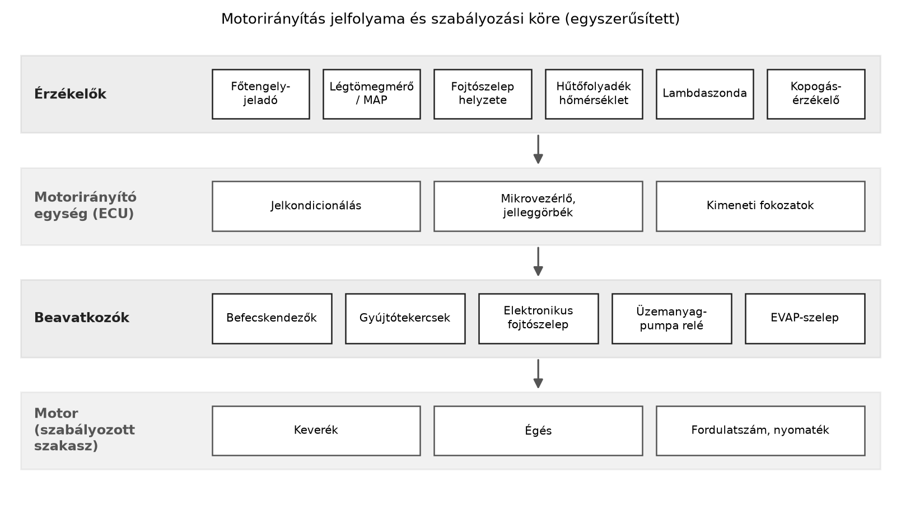

Ügyfél panasza: „reggel nehezen indul, alapjáraton remeg, a motorhiba-lámpa világít, és mintha többet fogyasztana”. A rendszerteszter P0171-es, P0300-as vagy P0118-as hibakódot mutat. Ilyenkor haszontalan csak a kódot törölni, vagy találomra alkatrészt cserélni. Meg kell értenünk, hogyan dolgozza fel a motorirányító egység (ECU, Engine Control Unit) az érzékelők jeleit, hogyan ismeri fel az üzemállapotot, és hogyan vezérli a befecskendezést, gyújtást és a járulékos rendszereket. E nélkül a diagnosztikai élő adatokat sem tudjuk értelmezni, és a javítás vaktában történő alkatrészcsere lesz.
A motorirányítás lelke a jelfolyam: az érzékelők mérik a motor pillanatnyi állapotát, az ECU a jeleket feldolgozza, és a beavatkozókat úgy vezérli, hogy az üzemállapotnak megfelelő keverék és gyújtás jöjjön létre. Az alábbi rétegábra a jellemző felosztást mutatja:

Az ábra felső rétege az érzékelőket mutatja: ezek szolgáltatják a nyers jeleket. A középső réteg az ECU, ahol a jelek feldolgozása és a döntések megszületnek. A harmadik réteg a beavatkozókat tartalmazza: ezek hajtják végre a parancsokat. A legalsó réteg maga a motor, a szabályozott szakasz: itt alakul ki a keverék, az égés és a fordulatszám. A nyilak a jelfolyam irányát jelzik: a beavatkozók felől nincs közvetlen visszacsatolás, a motor állapotát ismét az érzékelők mérik – ez zárja a szabályozási kört.
A motorirányítás megértéséhez először két alapvető irányítási módot kell megkülönböztetnünk.
Definíció. Vezérlés (nyílt hurok, open loop). Olyan irányítási folyamat, amelyben a kimenetet közvetlenül a bemeneti jelek alapján, előre meghatározott jelleggörbék vagy program szerint állítják be, anélkül hogy a kimeneti jellemzőt mérnék és hasonlítanák össze a kívánt értékkel. Példa: hidegindításkor az ECU a hűtőfolyadék-hőmérséklet alapján dús keveréket állít be, de nem méri közvetlenül az égés λ-ját.
Definíció. Szabályozás (zárt hurok, closed loop). Olyan irányítás, amelyben a kimenő jellemzőt (például a kipufogógáz oxigéntartalmát, a fordulatszámot, a kopogást) mérik, és ezt a mért értéket összehasonlítják a kívánt alapértékkel. Az eltérés (hibajel) alapján a vezérlő módosítja a beavatkozó jelet. Példa: a lambdaszabályozás, amelyben az elő-katalizátor lambdaszonda jeléből az ECU folyamatosan korrigálja a befecskendezési mennyiséget.
A felső sávban a jel csak előre halad: a hőmérséklet alapján számolt befecskendezés eredményét senki nem méri. Az alsó sávban az összegző a λ = 1 alapjelből és a lambdaszonda által mért értékből képzi az hibajelet, a szabályozó ebből módosítja a befecskendezési időt, a szaggatott visszacsatoló ág pedig bezárja a kört. A zavaró jellemző (hamislevegő, üzemanyagnyomás) a szakaszra hat. A HTML-változat lépésenként végigvezet a jelúton, az utolsó lépés pedig megmutatja, hogy hamislevegőnél a szabályozás növeli a befecskendezési időt, a vezérlés nem korrigál.
Definíció. Motorirányító egység (ECU). Elektronikus vezérlőegység, amely a motorérzékelők jeleit fogadja, azokat feldolgozza, és a motor beavatkozóit (befecskendezők, gyújtótekercsek, fojtószelep-állító, relék, szelepek) vezérli.
A motorirányítás jelfolyama tehát három lépésből
áll: érzékelők → ECU → beavatkozók. A zárt szabályozási
körökben ezt kiegészíti a motor (szabályozott szakasz) és a visszavezető
érzékelő. A vezérlési ág nyitott, a szabályozási ág zárt hurkot
alkot.
Továbbvitt eredmény. Ez a jelfolyam a kiindulópontja a Érzékelők és jeladók alfejezetnek, ahol az egyes jelek típusait és karakterisztikáit elemezzük, és a Fedélzeti diagnosztika: OBD és EOBD alfejezetnek, ahol a hibakódok, élő adatok és a fagyott keret (freeze frame) értelmezése éppen ezen a jelfolyamon alapul.
A belső égésű motorban a keverékképzésnek több, egymásnak részben ellentmondó követelményt kell teljesítenie:
Az ECU tehát nem egyszerűen „több vagy kevesebb benzint” adagol, hanem minden pillanatban azonosítja az üzemállapotot, kiszámítja a szükséges levegő–tüzelőanyag arányt és gyújtási szöget, majd a beavatkozókat ennek megfelelően vezérli. A befecskendezési idő alapegyenlete:
ahol a befecskendezési idő (ms), a szükséges tüzelőanyag-tömeg (g), az injektor tényleges tömegárama (g/s). A szükséges tüzelőanyag-tömeg a hengertöltésből és a megcélzott légviszonyból adódik:
ahol a hengerbe jutó levegő tömege (g), a légviszony, a benzin sztöchiometrikus levegőigénye (kg levegő / kg tüzelőanyag). Ezt a számítást az Szívócső-befecskendezés alfejezetben alapoztuk meg.
A motorvezérlő ECU felépítése funkcionálisan négy fő egységre bontható.
1. Bemeneti szakasz – jelkondicionálás. A bejövő jelek három nagy csoportba sorolhatók:
A bemeneti szakasznak védelmet kell nyújtania a túlfeszültség, a fordított polaritás és az elektromágneses zavarok ellen.
2. Mikrovezérlő és memória. A digitalizált jeleket a mikrovezérlő dolgozza fel. A memória szerepe:
A jelleggörbe (térkép, map) lényege: a vezérlő nem minden egyes pontot számol ki analitikusan, hanem előre betárolt táblázatokból interpolál. Például a befecskendezési alapmennyiséget a légtömeg és a fordulatszám kétdimenziós táblázatából, a gyújtási szöget a fordulatszám és a terhelés függvényében tárolt gyújtási térképből veszi.
3. Kimeneti fokozatok. Az ECU a beavatkozókat teljesítményfokozatokon keresztül vezérli:
15 feszültségén van).4. Kommunikációs interfész. Az ECU a jármű többi vezérlőjével adatbuszon (például CAN) kommunikál, a diagnosztikai műszerrel pedig a diagnosztikai csatlakozón keresztül tart kapcsolatot.
Vészüzem (limp home). Ha az ECU a kritikus bemeneti jelekben hibát észlel, vagy a rendszerben olyan állapot lép fel, amely a motor károsodását okozhatná, a motorirányítás vészüzemi programra vált. Ilyenkor a vezérlő rögzített alapértékekkel dolgozik, gyakran letiltja a szabályozási funkciókat, csökkenti a teljesítményt és a fordulatszámot, hogy a járművel biztonságosan el lehessen jutni a szervizbe. A vészüzem célja a további károsodás megelőzése, nem a teljesítmény fenntartása.
Előírás. A motorirányító rendszereknek teljesíteniük kell a mindenkori uniós típusjóváhagyási és fedélzeti diagnosztikai (EOBD) követelményeket, beleértve a károsanyag-kibocsátás és a hibakódok elérhetőségének előírásait is (ellenőrizendő: az aktuális EU-rendelet és ECE-előírások). A kibocsátáscsökkentő rendszerek (katalizátor, lambda-szabályozás, EVAP) eltávolítása vagy manipulálása tilos.
Az ECU a motor üzemállapotát a mért jelekből azonosítja. A leggyakoribb üzemállapotok és azok kezelési stratégiája a következő.
Hidegindítás. A hűtőfolyadék-hőmérséklet alacsony, a fordulatszám akár 300–500 1/min az indítás pillanatában. Az ECU dús keveréket (), nagyobb befecskendezési időt és emelt alapjárati fordulatszámot állít be. A gyújtási szöget gyakran késlelteti, hogy a katalizátor gyorsabban elérje az üzemi hőmérsékletet. Ez tipikus vezérlés, mert a lambdaszonda még hideg, és a katalizátor sem tudja ellátni feladatát.
Bemelegedés. A hőmérséklet növekedésével a dúsítás fokozatosan csökken, majd amint a lambdaszonda és a katalizátor eléri az üzemi feltételeket, az ECU átvált lambdaszabályozásra (zárt hurok). A bemelegedés tehát átmenet a nyílt hurokról a zárt hurokra.
Alapjárat. A fojtószelep alaphelyzetben van, a fordulatszámot az ECU alapjárat-szabályozással tartja. A zárt hurkú szabályozás a kívánt alapjárati fordulatszámot a hűtőfolyadék-hőmérséklet, a klíma, a villamos fogyasztók és a sebesség függvényében határozza meg, a tényleges fordulatszámot a főtengely-jeladóból méri. Eltérés esetén a levegő- vagy gyújtásoldali beavatkozással korrigál.
Részterhelés. Ez a legnagyobb üzemidőtartam. A motorvezérlő λ=1 szerinti keveréket és gazdaságos gyújtási szöget állít be. A lambdaszabályozás zárt hurokban működik, a katalizátor maximális konverziós hatásfokot biztosít. A befecskendezési mennyiséget a légtömeg vagy a szívócsőnyomás alapján számított hengertöltés és a λ=1 kívánt érték határozza meg.
Teljes terhelés. A fojtószelep teljesen nyitott, a fordulatszám és a terhelés magas. A maximális teljesítmény eléréséhez az ECU dús keverékre vált (), és a gyújtási szöget a maximális nyomatékhoz, illetve a kopogáshatárhoz igazítja. A lambda-szabályozás ilyenkor felfüggesztődik, mert a kívánt λ nem 1, és a szonda jelét nem lehet közvetlenül a keverékhez felhasználni.
Gyorsítás (tranziens üzemállapot). A fojtószelep hirtelen nyitásakor a levegő tömege azonnal megnő, de a szívócső falán lerakódott benzinfilm lassabban követi a változást. Emiatt átmeneti dúsítást alkalmaz az ECU, hogy a hengerbe érkező keverék ne legyen szegény. A kompenzáció mértéke hőmérséklet-, fordulatszám- és terhelésfüggő.
Motorfék. A vezető felengedi a gázpedált, a fojtószelep zár. Az ECU leállítja a befecskendezést (deceleration fuel cut-off), így csökken a fogyasztás és a károsanyag-kibocsátás. Újabb gázadáskor vagy a fordulatszám alapjárat közelébe esésekor a befecskendezés zökkenőmentesen visszakapcsol.
Kopogásszabályozás. A kopogásérzékelő rezgésjeléből az ECU felismeri a kopogást. Ez zárt szabályozási hurok, amely kopogáskor a gyújtási szöget fokozatosan késlelteti, amíg a kopogás megszűnik, majd lassan visszatér az optimális szög felé. Ezzel a motor a lehető legjobb hatásfokkal üzemel a kopogáshatáron, anélkül hogy károsodna.
A mai motorirányítás megértéséhez érdemes megemlíteni a múltbeli átmeneti rendszert. Az elektronikus vezérlésű karburátor (például az 1980-as évek bizonyos Bosch Ecotronic rendszerei; ellenőrizendő: pontos elnevezés és évjárat) a karburátoros alapadagolást megtartotta, de a hidegindítást, az alapjárati levegőt és a gázpedál-állás szerinti korrekciót már elektronikusan vezérelte. A fő adagolás azonban továbbra is mechanikus volt, így a pontossága messze elmaradt a későbbi befecskendező rendszerektől. A rendszer ma már ritka, de régi járművön a működés elve hasonló: elektronikus korrekció egy mechanikus alaprendszeren.
A modern motorirányításban a befecskendezést és a gyújtást közös vezérlőegység, illetve koordinált rendszer irányítja.
Motronic típusú benzinrendszerek. A Bosch Motronic (rendszermegnevezés) a szívócső-befecskendezést és a gyújtást egyetlen ECU-ban egyesíti. A közös vezérlés előnye, hogy a befecskendezési idő és a gyújtási szög ugyanabban a jelleggörberendszerben, ugyanazon mért jelek alapján határozható meg. A Motronic rendszerekben a befecskendezés lehet hengerenkénti (MPi), később közvetlen befecskendezés (MED), a gyújtás pedig teljesen elektronikus. Az ECU a lambda-szabályozást, az alapjárat-szabályozást, a kopogásszabályozást, a EVAP-vezérlést és az indításgátlóval való kommunikációt is kezeli. A mai benzinmotoros rendszerek az ebből az elvből fejlődtek tovább.
EDC típusú dízelrendszerek. Az EDC (Electronic Diesel Control) gyűjtőfogalom a dízelmotorok elektronikus irányítására. A történeti fejlődésben több generációt különböztetünk meg:
A dízelmotorokban nincs gyújtás, ezért az EDC fő feladata a befecskendezési mennyiség, a befecskendezési időpont, a többszöri elő- és utóbefecskendezés, a nyomás és a levegőellátás vezérlése. A common rail rendszerben a mágnesszelepes befecskendezőket az ECU emelt (boost) feszültséggel, jellemzően több tíz volttal és több tíz amperes csúcsárammal nyitja, majd kisebb tartóárammal tartja nyitva; a piezoinjektorokat 100–200 V körüli feszültséggel működteti (ellenőrizendő: gyártói adat). Ezért az ECU kimeneti fokozatai nagy áram- és feszültségtűrésűek, és járó motornál az injektorcsatlakozót nem bontjuk, nem érintjük. (A „HV” jelölés a könyvben az elektromos hajtás nagyfeszültségű rendszerét jelenti, nem ezt.)
Figyelem. A common rail dízelrendszer nagynyomású oldalán üzemi nyomás akár 1600–2500 bar is lehet (ellenőrizendő: gyártói adat). A nagynyomású csöveket és befecskendezőket járó motor mellett, illetve nyomás alatt tilos megbontani. A sugár bőrbe hatolva súlyos, akár végleges sérülést okoz. Bármilyen szerelés előtt a rendszer nyomásmentesítése a gyártói javítási utasítás szerint kötelező.
1. példa – Üzemállapot-felismerés mérési adatokból. Az ECU a következő jeleket méri:
Melyik üzemállapotban van a motor?
A fojtószelep zárt, a fordulatszám az alapjáratinál kissé magasabb, a
jármű áll, a szonda hideg. Ez a hidegindítás utáni emelt
alapjárat (bemelegedési szakasz). Az ECU dús keveréket és emelt
alapjárati fordulatszámot alkalmaz; ez még nyílt hurkú vezérlés. A
hőmérséklet emelkedésével a fordulatszám csökken, a lambdaszabályozás
bekapcsol.
2. példa – Befecskendezési idő durva becslése. Adott egy 4 hengeres, szívócső-befecskendezéses Otto-motor. Alapjáraton az ECU által számított hengerenkénti levegőtöltés ciklusonként. A cél légviszony , a benzin sztöchiometrikus levegőigénye . Az injektor statikus tömegárama . Mennyi a szükséges befecskendezési idő?
Megoldás. A szükséges tüzelőanyag-tömeg:
A befecskendezési idő:
A kapott 3,4 ms nagyságrendileg reális alapjárati befecskendezési idő (szívócső-befecskendezésnél jellemzően 2–4 ms; ellenőrizendő: gyártói adat). Alapjáraton a szívócső nyomása kicsi, ezért egy 0,5 l-es hengerbe csak kb. 0,1–0,15 g levegő jut; teljes töltésnél kb. 0,55–0,6 g, és ott a befecskendezési idő is többszöröse. A pontos érték minden motornál gyártói adat. A példa tanulási célú; az injektor átfolyása nyomásfüggő.
A motorirányítás ellenőrzésekor a rendszerteszter a legfontosabb eszköz. A vizsgálati sorrend:
Valós eset. Egy benzinüzemű autó reggelente nehezen indul, alapjáraton remeg, és a kipufogóból enyhe benzinszag érződik. A rendszerteszter P0118 hibakódot mutat: „hűtőfolyadék-hőmérséklet szenzor jel áramkör – magas bemenet”. Az élő adatoknál a mért hűtőfolyadék-hőmérséklet , miközben a motorház és a környezet hőmérséklete . A műszer szerint a szonda hideg.
Hibakeresési lánc. A tünet és a kód alapján a lehetséges okok: szakadt vezeték a szenzor és az ECU között, rossz csatlakozó, vagy maga a szenzor belső szakadása. Az ECU a hibás jelet rendkívül hidegnek értelmezi, ezért hidegindítási dúsítást alkalmaz, ami magas fogyasztást és rossz égést okoz. A hibakeresés során a szenzor csatlakozójánál a referenciafeszültség (jellemzően 5 V) és a jelvezeték folytonosságát mérjük, majd a szenzor ellenállását hőmérsékletfüggően. A mért ellenállás végtelen, ami belső szakadást jelez. A szenzort cseréljük, a hibakódot töröljük, a readiness teszteket lefuttatjuk, és próbaúttal ellenőrizzük, hogy a hőmérséklet-jel követi a motorhőmérsékletet. A tanulság: a motorirányítás egyszerű NTC-hibája is teljesen felboríthatja a keverékképzést, mert az ECU a hidegindítási stratégiát alkalmazza a valós meleg motornál.
30
(állandó plusz), 15 (gyújtás utáni plusz) és
31 (test) kapcsok feszültségét, illetve a földelési pontok
átmeneti ellenállását. A rossz test sok furcsa, kódszerűen nehezen
értelmezhető hibát okoz.1. feladat (A)
Definiáld a vezérlést és a
szabályozást, és adj mindegyikre egy példát a
motorirányításból.
2. feladat (A)
Sorold fel az ECU négy fő funkcionális egységét, és írd le mindegyiknek
egy jellemző alkatrészét vagy feladatát.
3. feladat (B)
Egy motor hidegindításakor a hűtőfolyadék-hőmérséklet
.
Az alap befecskendezési idő 8,0 ms, a hidegindítási korrekciós tényező a
jelleggörbéből +40%. Mennyi a korrigált befecskendezési idő? (A számítás
egyszerű, de a korrekció értéke tanulási példa, a valóságban a pontos
jelleggörbe gyártói adat.)
4. feladat (B)
Egy 4 hengeres Otto-motor alapjáraton
fordulatszámon jár. Az ECU által számított hengerenkénti levegőtöltés
,
a cél légviszony
,
a benzin sztöchiometrikus levegőigénye
.
Az injektor statikus tömegárama
.
Számítsd ki a befecskendezési időt ms-ban.
5. feladat (C)
Magyarázd el, miért alkalmaz az ECU teljes terhelésnél dúsítást
(),
és mi történik akkor, ha ez a dúsítás hibásan elmarad. Milyen műszerrel
lehet a valós λ-t ellenőrizni ebben az üzemállapotban?
6. feladat (D)
Egy autó hidegindítás után állandóan magas alapjárati fordulatszámon
jár, a kipufogóból fekete füst áramlik. A diagnosztikai műszer P0118
hibakódot mutat, az élő adatokban a hűtőfolyadék-hőmérséklet
(környezeti hőmérséklet
).
Határozd meg a hibakeresési láncot: tünet, hipotézis, mérés, ok,
javítás, ellenőrzés, megelőzés.
1. feladat (A)
Vezérlés: a kimenetet a bemeneti jelek alapján,
visszacsatolás nélkül állítja be. Példa: hidegindítási dúsítás a
hőmérséklet függvényében.
Szabályozás: a kimenetet mérik, összehasonlítják az
alapértékkel, és az eltérés alapján korrigálnak. Példa:
lambdaszabályozás, ahol az elő-katalizátor szonda jeléből az ECU a
befecskendezési időt módosítja.
2. feladat (A)
1. Bemeneti szakasz: jelkondicionálás, A/D átalakítás,
zavarvédelem.
2. Mikrovezérlő és memória: jelleggörbék, program,
adaptációk, hibakódok tárolása (ROM/Flash, RAM, EEPROM).
3. Kimeneti fokozatok: tranzisztoros kapcsolók,
H-hidak, PWM-meghajtók a beavatkozókhoz.
4. Kommunikációs interfész: diagnosztikai és
adatbusz-kapcsolatok (CAN, LIN, diagnosztikai vonal).
3. feladat (B)
Adott:
,
korrekció
.
Keresett:
.
Ellenőrzés: a korrigált idő nagyobb, mint az alap, ami hidegindításkor
dúsítást jelent. Az érték tanulási példa; a pontos korrekció gyártói
jelleggörbéből származik.
4. feladat (B)
Adott:
,
,
,
.
Keresett:
.
Ellenőrzés: az eredmény nagyságrendileg reális alapjárati
befecskendezési idő (jellemzően 2–4 ms, ellenőrizendő: gyártói adat); a
pontos érték gyártói adat.
5. feladat (C)
Teljes terhelésen a motor maximális teljesítményét akarjuk elérni. A dús
keverék
()
javítja a lángterjedést, hűti az égéstér belső felületeit (a párolgó
benzin hőt von el), és csökkenti a kopogás esélyét. Ha a dúsítás hibásan
elmarad, a motor kopoghat, a keverék szegénnyé válik, az égés
hőmérséklete és a NOx-kibocsátás nő, a teljesítmény csökken, és súlyos
esetben dugattyú- vagy gyújtógyertya-károsodás léphet fel. A valós λ-t
szélessávú lambdaszondával, illetve a kipufogógáz
elemzőjével mérhetjük; a diagnosztikai műszer élő adataiban a
befecskendezési időt és a λ-értéket követhetjük.
6. feladat (D)
Tünet: hidegindítás után magas alapjárat, fekete füst,
P0118 kód, a mért hűtőfolyadék-hőmérséklet irreálisan alacsony
().
Hipotézis: a hűtőfolyadék-hőmérséklet szenzor áramköre
szakadt, vagy a szenzor belső szakadása miatt az ECU hideg motort
feltételez, és folyamatos hidegindítási dúsítást alkalmaz.
Mérés: a szenzor csatlakozójánál ellenőrizzük az 5 V
referenciafeszültséget és a testfolytonosságot. A szenzor ellenállását
multiméterrel mérjük: ha végtelen, belső szakadás van.
Ok: szakadt NTC szenzor.
Javítás: hűtőfolyadék-hőmérséklet-szenzor cseréje, a
csatlakozó és a vezetékek ellenőrzése, majd a hibakód törlése és az
adaptációk visszaállítása.
Ellenőrzés: a motort bemelegítjük, és az élő adatban
figyeljük, hogy a hőmérséklet jel közelíti a valós hőfokot; próbaúttal
meggyőződünk az alapjárat normalizálódásáról.
Megelőzés: a szenzor csatlakozóját tiszta,
korróziómentes állapotban tartjuk; a hűtőfolyadékcserénél ügyelünk a
megfelelő légtelenítésre.
A motorirányítás a érzékelők → ECU → beavatkozók
jelfolyamra épül. A vezérlés nyílt hurkú, a
szabályozás zárt hurkú, mérési visszacsatolással. Az
ECU bemeneti szakasza fogadja az analóg, digitális és frekvenciajeleket;
a mikrovezérlő a tárolt jelleggörbékből interpolál, a kimeneti fokozatok
kapcsolják a befecskendezőket, gyújtótekercseket, reléket. Az
üzemállapotok (hidegindítás, bemelegedés, alapjárat, részterhelés,
teljes terhelés, gyorsítás, motorfék) eltérő stratégiát igényelnek; a
lambdaszabályozás, az alapjárat- és kopogásszabályozás zárt hurkok.
Vészüzem esetén az ECU rögzített alapértékekkel, csökkentett
teljesítménnyel üzemel. A Motronic típusú rendszerek a benzinmotor
befecskendezését és gyújtását egyesítik, az EDC a dízelbefecskendezést
vezérli a soros/elosztós, PDE és common rail változatokban.
Továbbvitt eredmény. Az itt bemutatott motorirányítási jelfolyam, a vezérlés/szabályozás megkülönböztetése és az üzemállapot-kezelés alapozza meg az Érzékelők és jeladók részletes tárgyalását, valamint a Fedélzeti diagnosztika: OBD és EOBD hibakód-, élő adat- és fagyott keret elemzését. A befecskendezési idő számításánál az és összefüggéseket használjuk; a pontos értékek mindig gyártói jelleggörbéből származnak. A nagynyomású dízelrendszereken csak nyomásmentesítés után, gyártói utasítás szerint szabad dolgozni.